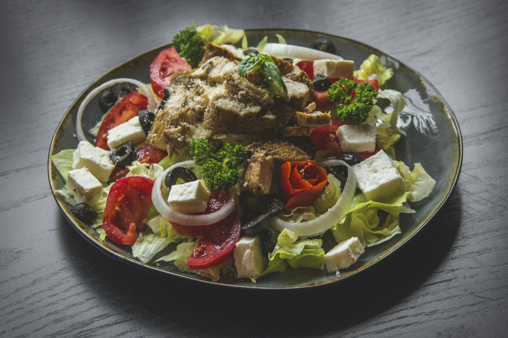

Greek Bowls (Chicken and Crispy Chickpea Tofu)
One lemon-oregano marinade for chicken on one pan and tofu with chickpeas on the other, over quinoa with salad, hummus, and a dairy-free tahini-lemon sauce.

Representative photo by amin ramezani on Unsplash
Serves 4 servings
Prep
Cook
Total
Ingredients
Marinade, for both pans
- 1/4 cup olive oil
- 2 lemons
- 4 cloves garlic, minced
- 2 tsp dried oregano
- 1 tsp salt
- black pepper
Meat pan
- 1 lb boneless skinless chicken thighs
Vegetarian pan
- 1 block (14 to 16 oz) extra-firm tofu, cubed
- 1 can (15 oz) chickpeas, drained and patted dry
Bowls
- 1 cup dry quinoa
- 1 large cucumber, diced
- 1 pint cherry tomatoes, halved
- 1/4 red onion, thinly sliced
- kalamata olives
- hummus
- 1 tbsp olive oil
- 1 tbsp red wine vinegar
- feta (dairy eaters only)
Tahini-lemon sauce
- 1/4 cup tahini
- 1 lemon
- 1 small clove garlic, grated
- salt
Steps
- Heat the oven to 425°F. Whisk the olive oil, juice of 2 lemons, minced garlic, oregano, salt, and pepper, then divide the marinade in two.
- Coat the chicken in half. Toss the tofu and chickpeas in the other half.
- Spread each on its own sheet pan. Roast 20 to 25 minutes, shaking the vegetarian pan once, until the chicken reaches 165°F and the chickpeas are crisp.
- Cook the quinoa in 2 cups water, covered, for 15 minutes. Rest 5 minutes and fluff.
- Toss the cucumber, tomatoes, and onion with 1 tbsp olive oil, the vinegar, and salt.
- Whisk the tahini, juice of 1 lemon, grated garlic, and salt, adding 3 to 4 tbsp water until it pours.
- Build bowls with about 1/2 cup quinoa, salad, hummus, olives, protein, and sauce. Feta goes on the dairy eaters' bowls only.
Keeping the quinoa to 1/2 cup cooked per bowl holds the carbs down. Leftover quinoa keeps 4 days.